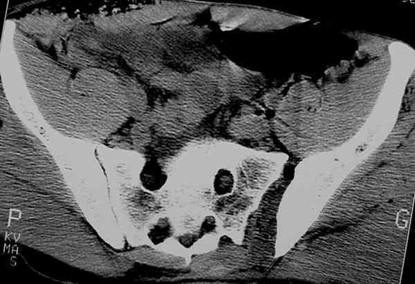
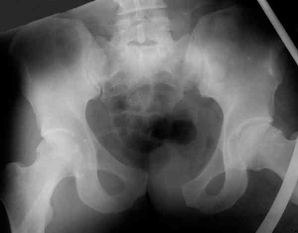
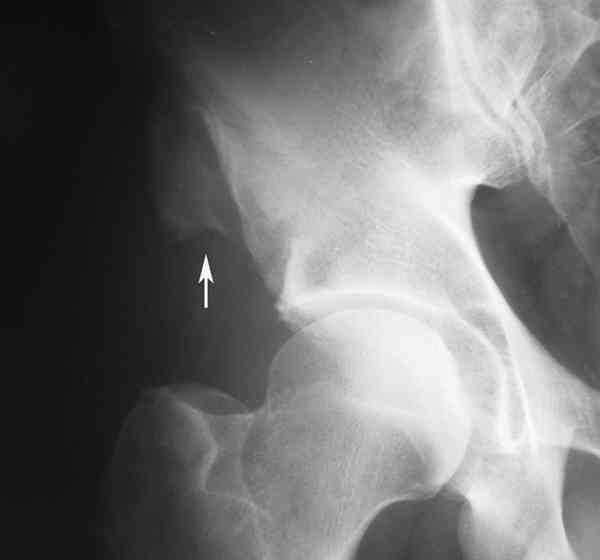
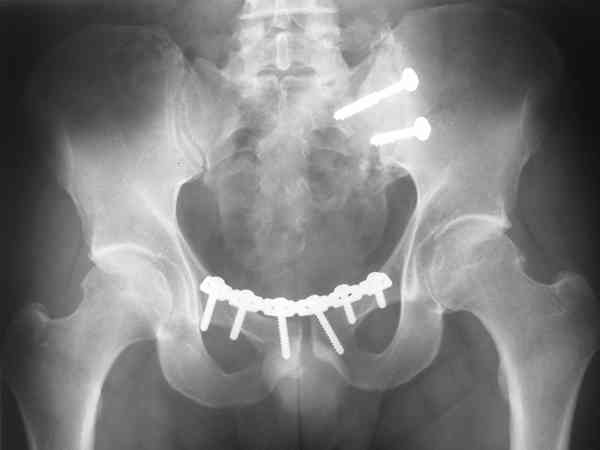

Bienvenue Sur Medical Education
Traumatismes de la ceinture pelvienne
Spécialité : traumatologie /
Points importants
-
En cas de traumatisme à haute énergie, une prise en charge multidisciplinaire s'impose car le patient est souvent choqué, polytraumatisé ou polyfracturé et un passage au déchocage s'impose d'emblée
-
En cas de traumatisme à basse énergie sans aucun signe de détresse vitale, un bilan radiologique s'impose dès l'admission du blessé
Présentation clinique / CIMU
SIGNES FONCTIONNELS
-
Impotence partielle ou totale
-
Douleur
CONTEXTE
-
Mécanisme à haute énergie cinétique sauf personnes âgées
Signes paracliniques
IMAGERIE
Présentation clinique / CIMU
SIGNES FONCTIONNELS
- Impotence partielle ou totale
- Douleur
CONTEXTE
- Mécanisme à haute énergie cinétique sauf personnes âgées
Signes paracliniques
IMAGERIE
Radiologie
- En cas de traumatisme à basse énergie sans aucun signe de détresse vitale, un bilan radiologique s'impose dès l'admission du blessé
-
Incidences de base :
- une radiographie du bassin de face
- un 3/4 alaire
- et un 3/4 obturateur du côté de la douleur prédominante
Scanner
- Le scanner est très utile pour bilanter les lésions postérieures éventuelles
 _325 Photo Scanner d'une disjonction sacro-iliaque gauche
Diagnostic étiologique
On distingue les lésions de l'anneau pelvien et les fractures parcellaires
LESIONS DE L’ANNEAU PELVIEN
Lésions antérieures
- Disjonction pubienne plus ou moins déplacée
 _323 Photo Disjonction pubienne associée à une luxation sacro-iliaque gauche
- Fractures des branches ilio et/ou ischio-pubiennes uni ou bilatérales
- Les fractures du médaillon pubien
Lésions postérieures
- Luxation ou disjonction sacro-iliaque
_323 Photo Disjonction pubienne associée à une luxation sacro-iliaque gauche
- Fractures de l'aileron sacré
- Lésions mixtes (fracture + luxation)
Lésions antérieures et postérieures
- A l'origine d'une instabilité majeure
- Pouvant conduire à une véritable luxation de l'hémi-bassin concerné
- Les lésions urinaires sont fréquentes (+++) surtout chez l'homme : lésion de l'urètre, lésion de la vessie
Lésions bilatérales correspondent au bassin « mou » ou « flottant »
LESIONS PARCELLAIRES
- Fractures de l'aile iliaque souvent consécutives à un choc direct sur la crête iliaque
- Fractures-avulsions rencontrées au décours d'accidents sportifs (+++) : épine iliaque antéro-supérieure (EIAS), épine iliaque antéro-inférieure (EIAI) et tubérosité ischiatique
 _324 Photo Fracture-avulsion de l'épine iliaque antéro-supérieure droite
Traitement
Un avis chirurgical doit être demandé en cas
- De luxation sacro-iliaque
- De disjonction pubienne
- De lésions antérieures et postérieures combinées
 _326 Photo Plaque de reconstruction sur le pubis et vissage isolé de la sacro-iliaque
- De fractures-avulsions déplacées (> 2 cm)
Une prise en charge médicale s'impose pour
-
Les fractures non déplacées ou peu déplacées des branches ilio et ischio-pubiennes :
- cannes-béquilles sans appui pendant 30 à 45 jours
- hospitalisation pendant 3 à 4 jours
- kiné de rééducation à la marche
- avec souvent un placement en moyen séjour car il s'agit la plupart du temps de personnes âgées dépendantes
-
Les fractures-avulsions peu déplacées (déplacement < 2 cm) :
- cannes-béquilles sans appui pendant 30 à 45 jours
- reprise du sport au bout de 90 jours
- les fractures de l'aile iliaque consolident sans problème, sans traitement particulier si ce n'est antalgiques, AINS et repos relatif jusqu'à disparition des douleurs
Bibliographie
-
Traumatologie à l'usage de l'urgentiste. Sous la direction de Dominique Saragaglia. Editions Sauramps Médical. 2004
Auteur(s) : Jean-Jacques BANIHACHEMI, Dominique SARAGAGLIA